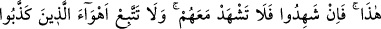
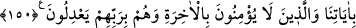

141. Çardaklı ve çardaksız (üzüm) bahçeleri, ürünleri çeşit çeşit hurmaları,
ekinleri, birbirine benzer ve benzemez biçimde zeytin ve narları yaratan O’dur.
Her biri meyve verdiği zaman meyvesinden yeyin. Devşirilip toplandığı gün de
hakkını (zekât ve sadakasını) verin, fakat israf etmeyin; çünkü Allah israf edenleri
sevmez.
142. Hayvanlardan yük taşıyanı ve tüyünden döşek yapılanları yaratan O’dur.
Allah’ın size verdiği rızıktan yeyin, şeytanın ardına düşmeyin; şüphesiz o sizin için
apaçık bir düşmandır.
143. (Dişi ve erkek olarak) sekiz eş yarattı: Koyundan iki, keçiden iki... De ki: O,
bunların erkeklerini mi, dişilerini mi, yoksa bu iki dişinin rahimlerinde bulunan
yavruları mı haram etti? Eğer doğru iseniz bana ilimle söyleyin.
144. Deveden de iki, sığırdan da iki (yarattı). De ki: O bunların erkeklerini mi,
dişilerini mi, yoksa bu iki dişinin rahimlerinde bulunan yavruları mı haram kıldı?
Yoksa Allah’ın size böyle vasiyet ettiğine şâhit mi oldunuz? Bilgisizce insanları
saptırmak için Allah’a karşı yalan uydurandan kim daha zalimdir! Şüphesiz Allah o
zalimler topluluğunu doğru yola iletmez.
145. De ki: Bana vahyolunanda, leş veya akıtılmış kan yahut domuz eti -ki pisliğin
kendisidir- ya da günah işlenerek Allah’tan başkası adına kesilmiş bir hayvandan
başka, yiyecek kimseye haram kılınmış birşey bulamıyorum. Başkasına zarar
vermemek ve sınırı aşmamak üzere kim (bunlardan) yemek zorunda kalırsa bilsin
ki Rabbin bağışlayan ve esirgeyendir.
146. Yahudilere bütün tırnaklı hayvanları haram kıldık. Sırtlarında yahut
bağırsaklarında taşıdıkları ya da kemiğe karışan yağlar hariç olmak üzere sığır ve
koyunun iç yağlarını da onlara haram kıldık. Bu, zulümleri yüzünden onlara
verdiğimiz cezâdır. Biz elbette doğru söyleyeniz.
147. Eğer seni yalanlarlarsa de ki: Rabbiniz geniş bir rahmet sahibidir. Bununla
beraber O’nun azabı, suçlular topluluğundan uzaklaştırılamaz.
148. Putperestler diyecekler ki: “Allah dileseydi ne biz ortak koşardık ne de
atalarımız. Hiçbir şeyi de haram kılmazdık.” Onlardan öncekiler de aynı şekilde
(peygmberleri) yalanladılar ve sonunda azabımızı tattılar. De ki: Yanınızda bize
açıklayacağınız bir bilgi var mı? Siz zandan başka bir şeye uymuyorsunuz ve siz
sadece yalan söylüyorsunuz.
149. De ki: Kesin delil, ancak Allah’ındır. Allah dileseydi elbette hepinizi doğru
yola iletirdi.
150. De ki: Allah şunu yasak etti, diye şehadet edecek şâhitlerinizi getirin! Eğer